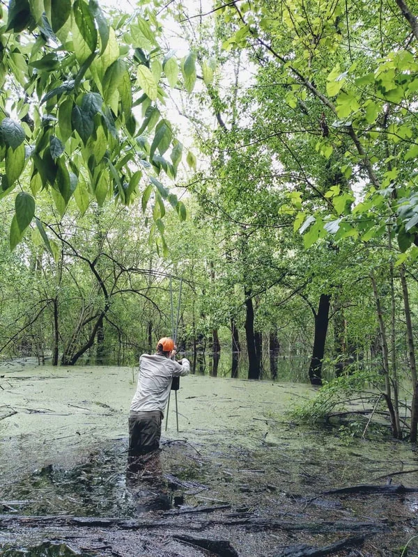

Join the Lab
Join the Antonson Lab at Cal Poly to study animal behavior, physiology, and bioacoustics.
Undergraduate research
Tell us what questions interest you and what you’d like to learn through research. One way to get involved is BegBase, our comparative database of nestling begging calls.

Prospective master’s students
If you’re interested in pursuing a master’s degree in the lab, email Nick with a short introduction, the research questions you’d like to explore, and when you hope to start.